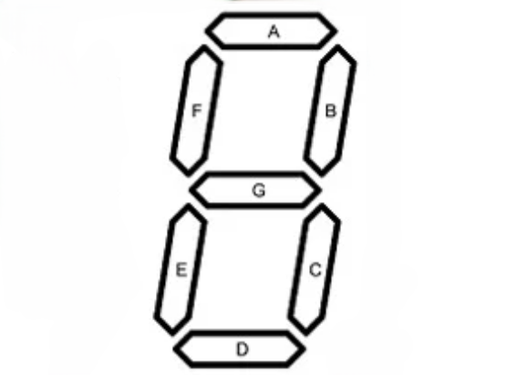
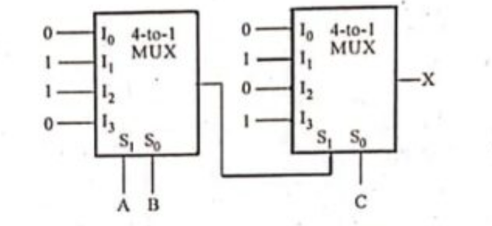
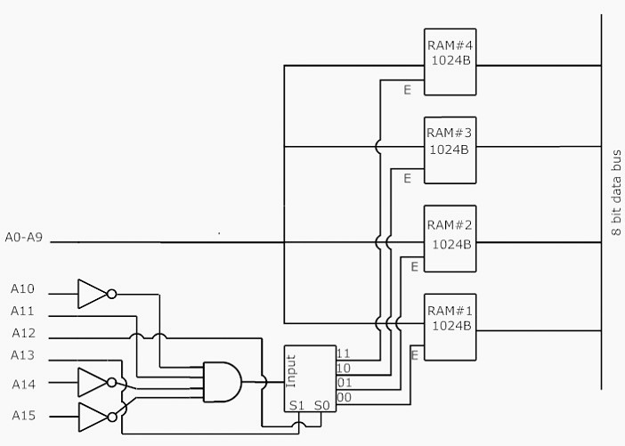
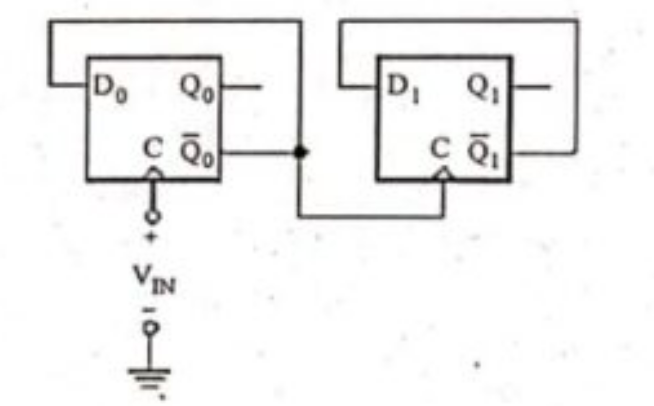
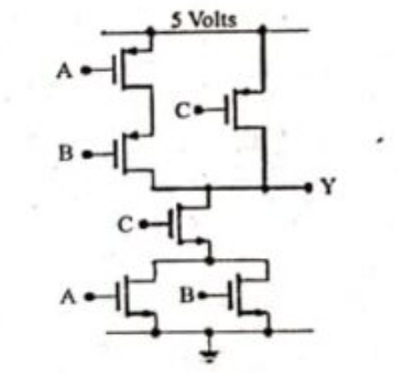

Rajiv Gandhi Proudyogiki Vishwavidyalaya, Bhopal
New Scheme Based On AICTE Flexible Curricula
Computer Science & Information Technology | III-Semester
Unit 1: Review of number systems
Review of number systems and number base conversions. Binary codes, Boolean algebra, Boolean functions, Logic gates. Simplification of Boolean functions, Karnaugh map methods, SOP-POS simplification, NAND-NOR implementation.
Previous Years questions appears in RGPV exam.
Q.1) Convert the number $(AD)_{16}$ into decimal and binary and octal numbers. (June-2025)
Q.2) Discuss the difference of Binary numbers and BCD code. What is binary number and BCD code for a decimal number $(13)_{10}$. (June-2025)
Q.3) What do you mean by Universal Gates? How to realize AND, OR and NOT functions using universal gates only? (June-2025)
Q.4) What do you mean by canonical form? Express the Boolean function $F = A + B'C$ in (i) SOP and (ii) POS. (June-2025)
Q.5) Convert the following decimal numbers to the indicated bases:
i) $(516)_7 = (\quad)_{10} = (\quad)_{16}$
ii) $(250.5)_{10} = (\quad)_8 = (\quad)_4$
iii) $(2ED)_{16} = (\quad)_8 = (\quad)_2$
iv) Obtain the 9's and 10's complement of $(864)_{10}$. (Dec-2024)
Q.6) Represent the decimal number 6 in: i) Excess-3 code, ii) BCD code, iii) Gray code, iv) 84-2-1 code, v) 2421 codes. (Dec-2024)
Q.7) Simplify the following expression as much as possible: $F(w,x,y,z)=y'z'+w'x'z'+w'xyz'+wyz'$ and implement your result using universal gates only. (Dec-2024)
Q.8) Express the following Boolean function F in a sum of min terms and a product of max terms: $F(x,y,z)=(xy+z)(y+xz)$. (Dec-2024)
Q.9) Reduce the expression $Y = \Sigma m (1, 4, 8, 12, 13, 15) + d (3, 14)$ using K-maps and implement the real minimal expression using basic logic gates. (Dec-2023)
Q.10) Perform the following conversions:
i) Add $(83)_{10}$ and $(34)_{10}$ in BCD.
ii) Convert the base-7 number $(35614)_7$ to base-12. (Dec-2023)
Q.11) Explain how the basic gates can be realized using NOR gates? (Dec-2023)
Q.12) Write a short note on: Karnaugh Map. (Dec-2023)
Q.13) Convert the following:
i) $(B2F8)_{16} = (?)_{8}$
ii) $(113.2)_{8} = (?)_{2}$
iii) $(01000111)_{2}$ ------ $(.........)_{Gray}$
iv) $(249)_{10}$ ----------- $(.........)_{BCD}$
v) $(A2B.1A)_{16} = (?)_{10}$ (June-2023)
Q.14) Convert the following expression into sum of product and product of sums: $X' + X (X + Y') (Y + Z')$. (June-2023)
Q.15) What do you mean by logic gates? Describe the various types of gates. (June-2023)
Q.16) Write a short note on: Karnaugh Map. (June-2023)
Q.17) Given the following Boolean function: $F(W,X,Y,Z) = WX'(Y'+Z') + X'.Z'.(W' \oplus Y)$ where $\oplus$ represents the XNOR operation, determine the simplified (minimal) SOP expression for F using boolean algebra and Implement the given function using NOR-NOR logic. (Nov-2022)
Q.18) Compute the prime implicants (PI) and essential prime implicants (EPI) in the following Boolean function: $F(W,X,Y,Z) = \prod M(1,3,5,7,8,9,11,12) + d(2,10)$. Compute a minimal SOP expression for F and determine whether it is unique. (Nov-2022)
Q.19) Each of the following functions actually represents a set of four functions, corresponding to the possible assignments of the don't-care terms.
$f_1(w,x,y,z) = \Sigma(1,3,5,6,9,10) + \sum_{\phi}(11,12)$
$f_2(w,x,y,z) = \Sigma(0,3,4,5,8,9) + \sum_{\phi}(6,7)$
i) Find $f_3 = f_1 \cdot f_2$ How many functions does $f_3$ represent?
ii) Find $f_4 = f_1 + f_2$ How many functions does $f_4$ represent? (Nov-2022)
Q.20) Given the network of Fig., determine the functions $f_2$ and $f_3$ if $f_1 = xz + x'z'$ and the overall transmission function is to be $f(w,x,y,z) = \sum(0,3,6,10,11,12)$. (Nov-2022)

Q.21) Convert Decimal to Binary: i) $(1024)_{10}$ ii) $(23.25)_{10}$. (Nov-2022)
Expected Sample Questions for Future Exams
Q.1) Simplify the following Boolean function using the Quine-McCluskey (Tabular) method: $F(A,B,C,D) = \Sigma(0,1,2,8,10,11,14,15)$. (Predicted)
Q.2) Explain Error Detecting and Correcting Codes. Construct the Hamming Code for the data data 1011. (Predicted)
Q.3) Perform subtraction using 1's complement and 2's complement methods for $(11010)_2 - (10000)_2$. (Predicted)
Q.4) Implement the Boolean function $F = AB + CD + E$ using NAND gates only. (Predicted)
Q.5) State and prove De Morgan's Theorems with truth tables. (Predicted)
Unit 2: Combinational Logic
Combinational Logic: Half adder, Half subtractor, Full adder, Full subtractor, lookahead carry generator, BCD adder, Series and parallel addition, Multiplexer – demultiplexer, encoder- decoder, arithmetic circuits, ALU
Previous Years questions appears in RGPV exam.
Q.1) Draw and discuss the circuit of look-ahead carry generator. (June-2025)
Q.2) What is the half subtractor circuit? Design a half subtractor circuit and write all the necessary steps of designing. (June-2025)
Q.3) Explain how decoders and multiplexers can be used to implement combinational circuits. Draw a full adder circuit with a decoder. (June-2025)
Q.4) What is a digital multiplexer? Implement a Boolean function $F(A, B, C) = \Sigma (1, 3, 5, 6)$ with a multiplexer. (June-2025)
Q.5) What is the role of multiplexer in the digital electronics? Explain the logic how it selects a one input among several inputs? (Dec-2024)
Q.6) Write a short note on decoder. (Dec-2024)
Q.7) Draw a full subtractor circuit using NAND gate. (Dec-2024)
Q.8) Realize the Boolean function $F (A, B, C) = \Sigma(1, 3, 4, 5, 6, 7)$ using only minimum number of 2-to-4 line decoder to generate the function at a particular output pin of decoder. (June-2024)
Q.9) A digital circuit which converts a BCD to seven segment is to be designed. A typical seven segment LED is shown in Fig. 2 given below. Design the logic circuit for the segment 'C' only. Assume the LED glows, when the input to segment is logic 'HIGH'. (June-2024)

Q.10) Find the output expression for variable 'X' for the given logic circuit shown in Fig. 4. (June-2024)

Q.11) Draw the truth table of a 2-bit by 2-bit binary multiplier. Implement the same using half adder and required additional logic gates. (June-2024)
Q.12) Design a Half adder circuit with truth table and logic diagrams. (Dec-2023)
Q.13) A combinational circuit is defined by the following Boolean functions. Design circuit with a decoder and external gates: $F_1(x, y, z) = x'y'z' + xz$, $F_2(x, y, z) = xyz' + x'z$. (Dec-2023)
Q.14) What are the different types of parallel adders? Explain carry save and carry look-ahead adders. (Dec-2023)
Q.15) What do you understand by Adder Circuit? Design and Implement Full Adder using Two half adder and OR Gate. (June-2023)
Q.16) Draw and explain the BCD adder circuit. (June-2023)
Q.17) Realize the function $f(A, B, C, D) = \pi(1, 4, 6, 10, 14) + d (0, 8, 11, 15)$ using: i) 16:1 MUX, ii) 8:1 MUX. (June-2023)
Q.18) Write a short note on: Look ahead carry generator. (June-2023)
Q.19) Design a $8 \times 1$ multiplexer using one $4 \times 1$ multiplexer and four $2 \times 1$ multiplexers. (Nov-2022)
Q.20) Design a combinational logic circuit to convert the BCD to excess-3 code. (Nov-2022)
Q.21) Design a $3 \times 8$ decoder using one $1 \times 2$ decoder and two $2 \times 4$ decoder with Enable input. (Nov-2022)
Q.22) Draw a schematic for a minimal circuit that uses only NOR gates that performs the two's complement operation on a four bit input value. Let the input be $A_{3:0}$ and the output be $B_{3:0}$. (Nov-2022)
Expected Sample Questions for Future Exams
Q.1) Design a 4-bit Magnitude Comparator and explain its working. (Predicted)
Q.2) Explain the working of a Priority Encoder with a truth table and logic diagram. (Predicted)
Q.3) Design a 1-bit Arithmetic Logic Unit (ALU) capable of performing AND, OR, ADD, and SUB operations. (Predicted)
Q.4) Implement a Full Adder using two 4:1 Multiplexers. (Predicted)
Q.5) Design a Binary to Gray Code converter circuit. (Predicted)
Unit 3: Sequential logic
Sequential logic: flip flops, D,T, S-R, J-K Master- Slave, racing condition, Edge & Level triggered circuits, Shift registers, Asynchronous and synchronous counters, their types and state diagrams. Semiconductor memories, Introduction to digital ICs 2716, 2732 etc. & their address decoding. Modern trends in semiconductor memories such as DRAM, FLASH RAM etc. Designing with ROM and PLA.
Previous Years questions appears in RGPV exam.
Q.1) Give a classification of storage devices. Discuss the modern trends in semiconductor memories such as DRAM, FLASH RAM etc. (June-2025)
Q.2) With the help of circuit diagram explain the working of JK flip-flop. Write its characteristics tables and equations. (June-2025)
Q.3) Write a short note on: Racing condition. (June-2025)
Q.4) Write a short note on: ROM and PLA. (June-2025)
Q.5) Explain race-around condition in relation to the J-K flip-flops using timing relationships. Draw the clocked Master-Slave J-K flip-flop configuration and explain how it removes race-around condition in J-K flip-flops? (Dec-2024)
Q.6) Design a ripple decade counter using JK flip-flop. (Dec-2024)
Q.7) Draw and explain 4-bit universal shift register. (Dec-2024)
Q.8) Write a short note on PLA. (Dec-2024)
Q.9) There are four chips each of 1024 bytes connected to a 16-bit address bus as shown in Fig. 1, given below. Find the address mapping of RAMs 1, 2, 3 and 4 respectively. (June-2024)

Q.10) The D flip-flops of Fig. 5 are positive edge triggered. Assuming that prior to t = 0, the states are $Q_0 = 0$ and $Q_1 = 0$, sketch the voltage waveforms at $Q_0$ and $Q_1$ versus time. Assume logic levels of 0 V and 5 V. (June-2024)

Q.11) Design a MOD - 4 synchronous UP counter using JK flip-flop. (June-2024)
Q.12) Explain the working of the master slave JK flip-flop. (Dec-2023)
Q.13) Design a 3-bit binary UP/DOWN counter with a direction control M, Use T flip-flop. (Dec-2023)
Q.14) Explain: DRAM and FLASH RAM. (Dec-2023)
Q.15) What is meant by 'edge triggered'? Differentiate SR-FF and JK-FF with their functional operation and excitation tables. (June-2023)
Q.16) Describe the 4-bit universal shift register with a neat diagram. (June-2023)
Q.17) Design a 4-bit up/down Synchronous binary counter. Explain with a neat timing diagram. (June-2023)
Q.18) Write a short note on: PLA. (June-2023)
Q.19) Draw the state diagram for the following specification sequential systems:
Input: $x(t), y(t) \in \{0,1\}$
Output: $z(t) \in \{0,1\}$
State: $s(t) \in$ {Even, odd}
Initial state: $s(0) =$ Even
Functions: $s(t+1) =$ even if $x(t)$ and $y(t)$ both are even; $s(t+1) =$ odd otherwise. $z(t) = 1$ if $x(t)$ and $y(t)$ both are even; $z(t) = 0$ otherwise. (Nov-2022)
Q.20) Design a synchronous counter to count in the random sequence 0, 2, 4, 5, 7, 0, 2, 4, 5, 7 using D flip-flop. (Nov-2022)
Q.21) Design a sequential circuit using T flip-flop for the following state table. (Nov-2022)
| Present State S(t) | Input X=0 S(t+1) / Output (Z) | Input X=1 S(t+1) / Output (Z) |
|---|---|---|
| $S_1$ | $S_1 / 1$ | $S_4 / 0$ |
| $S_2$ | $S_2 / 1$ | $S_4 / 1$ |
| $S_3$ | $S_2 / 1$ | $S_1 / 0$ |
| $S_4$ | $S_4 / 0$ | $S_2 / 0$ |
Q.22) Explain the concept of working and applications of following memories: i) ROM, ii) PLA, iii) DRAM, iv) FLASH RAM. (Nov-2022)
Expected Sample Questions for Future Exams
Q.1) Differentiate between Combinational and Sequential Circuits. (Predicted)
Q.2) Design a 4-bit Ring Counter and a Johnson Counter. Explain the difference. (Predicted)
Q.3) Explain the Excitation Table of SR, JK, D, and T Flip Flops. (Predicted)
Q.4) Implement the following function using PLA: $F1(A,B,C) = \Sigma(0,1,2,4)$ and $F2(A,B,C) = \Sigma(0,5,6,7)$. (Predicted)
Q.5) Explain the internal structure of RAM and 2D decoding. (Predicted)
Unit 4: Introduction to A/D & D/A convertors
Introduction to A/D & D/A convertors & their types, sample and hold circuits, Voltage to Frequency & Frequency to Voltage conversion. Multivibrators :Bistable, Monostable, Astable, Schmitt trigger, IC 555 & Its applications. TTL, PMOS, CMOS and NMOS logic. Interfacing between TTL to MOS.
Previous Years questions appears in RGPV exam.
Q.1) Compare TTL, PMOS, CMOS and NMOS logic families. (June-2025)
Q.2) Write a note on voltage to frequency and frequency to Voltage conversion. (June-2025)
Q.3) Discuss the need of A/D and D/A convertors. Draw successive approximation analog to digital converter and explain its working in details. (June-2025)
Q.4) Write a short note on: Schmitt trigger. (June-2025)
Q.5) With a neat diagram explain the operation of R-2R DAC. (Dec-2024)
Q.6) Describe the circuit and performance of CMOS inverter and state the characteristics of CMOS. (Dec-2024)
Q.7) Draw the circuit diagram of Schmitt trigger and explain its working. (Dec-2024)
Q.8) Explain the operation of a bistable multivibrator built around IC 555. Also, briefly discuss one of its applications in the field of digital systems. (June-2024)
Q.9) Explain the operation of a Schmitt trigger using IC 555 with a neat and labelled diagram. (June-2024)
Q.10) Explain the operation of a dual slope type ADC with a neat and labelled diagram. (June-2024)
Q.11) For the circuit shown in Fig. 3, identify the implemented Boolean logic expression for output 'Y'. (June-2024)

Q.12) Explain the operation of a 4-bit R-2R ladder DAC using a neat diagram. (June-2024)
Q.13) Draw and explain the PMOS, NMOS and CMOS logic. (Dec-2023)
Q.14) Explain how a Schmitt Trigger circuit works with a neat diagram. Design an Schmitt trigger with $V_{UT} = 2V$, $V_{LT} = -1V$. Assume $+V_{sat} = + 13V$, $-V_{sat} = -13V$. (Dec-2023)
Q.15) Derive the frequency of oscillation of an astable multivibrator using IC 555 timer. (Dec-2023)
Q.16) An 8-bit D/A converter has a resolution of 10mV/bit. Find the analog output voltage for the inputs: i) 10001010, ii) 00010000. (Dec-2023)
Q.17) Describe the operation of dual slope A/D converter with necessary diagrams. (Dec-2023)
Q.18) Explain the principle working of sample and hold circuit. (June-2023)
Q.19) An n-bit Analog to Digital converter (ADC) is required to convert an analog input in the range 0-5 V dc to an accuracy of 5mv. Find the value of n. (June-2023)
Q.20) With the help of circuit diagram explain the working of V-F converters. (June-2023)
Q.21) Write a short note on: Schmitt trigger. (June-2023)
Q.22) Explain Interfacing between TTL and MOS with example. (Nov-2022)
Q.23) Write notes on: i) A/D and D/A convertors, ii) CMOS Logic. (Nov-2022)
Expected Sample Questions for Future Exams
Q.1) Draw the functional block diagram of IC 555 Timer and explain each pin. (Predicted)
Q.2) Define Resolution, Accuracy, and Monotonicity of D/A converters. (Predicted)
Q.3) Explain the working of Monostable Multivibrator using 555 Timer and derive expression for pulse width. (Predicted)
Q.4) Draw the circuit of a TTL NAND gate with Totem Pole output and explain its operation. (Predicted)
Q.5) Explain the Weighted Resistor D/A converter with a circuit diagram. What are its disadvantages? (Predicted)
Unit 5: Introduction to Digital Communication
Introduction to Digital Communication: Nyquist sampling theorem, time division multiplexing, PCM, quantization error, introduction to BPSK & BFSK modulation schemes. Shannon’s theorem for channel capacity
Previous Years questions appears in RGPV exam.
Q.1) Draw block diagram of Pulse Code Modulation (PCM) and explain it in detail. What do you mean by quantization error and how to minimize it? (June-2025)
Q.2) Write a short note on: Shannon's theorem for channel capacity. (June-2025)
Q.3) Write a short note on PCM. (Dec-2024)
Q.4) Explain the geometrical representation of Non-orthogonal BFSK. (Dec-2024)
Q.5) Explain BPSK modulation scheme. (June-2024)
Q.6) What do you understand by time division multiplexing? (June-2024)
Q.7) What is pulse code modulation? Explain about the quantization and quantization error. (June-2024)
Q.8) Explain Nyquist sampling theorem. What should be typical sampling frequency for sampling a sinusoidal signal of frequency (Fm, Hz) for a practical system? (June-2024)
Q.9) What is mutual information and how it is related to channel capacity? For a standard voice band communication channel the signal to noise ratio is 30dB and transmission bandwidth is 3 KHz. What will be the Shannon limit for information in bits/sec? (Dec-2023)
Q.10) Explain BFSK modulation schemes. (Dec-2023)
Q.11) With the help of Block diagram explain the working of BPSK modulation scheme. (June-2023)
Q.12) What do you understand by Multiplexing? Explain the working principle of Time Division Multiplexing with suitable diagram. (June-2023)
Q.13) Write notes on: i) Shannon's theorem for channel capacity, ii) Nyquist sampling theorem. (Nov-2022)
Expected Sample Questions for Future Exams
Q.1) Compare Pulse Code Modulation (PCM) and Delta Modulation (DM). (Predicted)
Q.2) Explain the concept of Companding in PCM. (Predicted)
Q.3) Explain the generation and detection of QPSK (Quadrature Phase Shift Keying). (Predicted)
Q.4) What is Aliasing? How can it be avoided? (Predicted)
Q.5) Derive the expression for Quantization Noise Power in a PCM system. (Predicted)